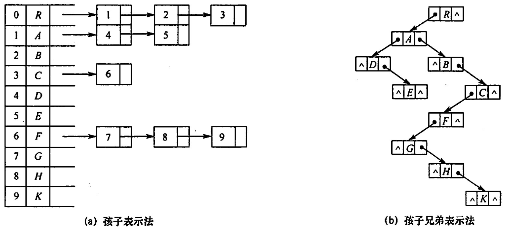

树、森林
2022.09.14
存储结构
双亲表示法

typedef struct{ElementType data;int parent;}PTNode;typedef struct{PTNode nodes[MAX_TREE_SIZE];int n;}PTree;孩子表示法
孩子兄弟表示法：左孩子右兄弟

树的遍历
树
- 先根遍历——先序遍历
- 后根遍历——中序遍历：左根右！
森林
- 先序遍历森林
- 中序遍历森林
例题
下列关于树的说法中，正确的是(）. I.对于有n个结点的二叉树，其高度为 log2 n II.完全二叉树中，若一个结点没有左孩子，则它必是叶结点 III.高度为h（h>0）的完全二叉树对应的森林所含的树的个数一定是h IV.一棵树中的叶子数一定等于与其对应的二叉树的叶子数 A. I和III B. IV C. I和II D. II
【答案】：D
利用二叉链表存储森林时，根结点的右指针是()。 A．指向最左兄弟B.指向最右兄弟 C.一定为空 D. 不一定为空
【答案】：D
设森林F中有3棵树，第一、第二．第三棵树的结点个数分别为M1，M2和M3。与森林对应的二叉树根结点的右子树上的结点个数是（）. A. M1 B. M1+M2 C. M3 D. M2+M3
【答案】：D
设森林F对应的二叉树为B，它有m个结点，B的根为p，p的右子树结点个数为n，森林F中第一棵树的结点个数是( )。 A. m-n B. m-n-1 C. n+1 D. 条件不足，无法确定
【答案】：A
森林T=（T1，T2，…，Tm）转化为二叉树BT的过程为：若m=0，则BT为空，若m≠0，则（)。 A．将中间子树 Tmid (mid =（1 + m)/2）的根作为BT的根；将(T1，T2,…，Tmid-1)转专换为BT 的左子树;将(T{mid+1}，…，Tm）转换为 BT 的右子树 B. 将子树T1的根作为 BT 的根;将T1的子树森林转换成 BT 的左子树;将(T2,T3,…，Tn)转换成 BT的右子树 C. 将子树T1的根作为 BT 的根;将T1的左子树森林转换成 BT 的左子树;将T1的右子树森林转换为 BT 的右子树;其他以此类推 D.将森林T的根作为 BT 的根;将(T1，T2，…，Tm)转化为该根下的结点，得到一棵树，然后将这採树再转化为二叉树 BT
【答案】：B
设F是一个森林，B是由F变换来的二叉树。若F中有n个非终端结点，则B中右指针域为空的结点有（ ）个。 A.n-1 B.n C.n+1 D.n+2
【答案】：A? -> C
若T1是由有序树T转换而来的二叉树，则T中结点的后根序列就是T中结点的 ( ）序列。 A.先序 B.中序 C.后序 D.层序
【答案】：B
某二叉树结点的中序序列为 BDAECF，后序序列为 DBEFCA，则该二叉树对应的森林包括（ ）树。 A. 8 B. 2 C. 3 D. 4
【答案】：C
A / \ B C \ / \ D E F
设X是树T中的一个非根结点，B是T所对应的二叉树。在B中，x不是其双亲结点的右孩子，下列结论中正确的是(）。 A. 在树T中，X是其双亲结点的第一个孩子 B. 在树T中，X一定无右边兄弟 C. 在树T中，X一定是叶子结点 D. 在树T中，X一定有左边兄弟
【答案】：C -> D
在森林的二叉树表示中，结点M和结点N是同一父结点的左儿子和右儿子，则在该森林中（）。 A. M和N有同一双亲 B. M和N可能无公共祖先 C. M是N的儿子 D. M是N的左兄弟
【答案】：B
【2009 统考真题】将森林转换为对应的二叉树，若在二叉树中，结点u是结点v的父结点的父结点，则在原来的森林中，u和v可能具有的关系是(）
I父子关系 II兄弟关系 III u的父结点v的父结点是兄弟关系
A. 只有II B. I和II C. I和I D. I、II和III
【答案】：B
【2011 统考真题】已知一棵有2011 个结点的树，其叶结点个数为 116，该树对应的二叉树中无右孩子的结点个数是（）。 A. 115 B. 116 C. 1895 D. 1896
【答案】：2011-116 = 1895，D
【2014 統考真题】将森林F转换为对应的二叉树T，F中叶结点的个数等于（）. A.T中叶结点的个数 B.T中度为1的结点个数 C.T中左孩子指针为空的结点个数 D.T中右孩子指针为空的结点个数
【答案】：C
【2016 统考真题】若森林F有15条边、25个结点，则F包含树的个数是（）. A. 8 B. 9 C. 10 D. 11
【答案】：10，C
【2019 统考真题】若将一颗树T转化为对应的二叉树BT，则下列对 BT 的遍历中，其遍历序列与T的后根遍历序列相同的是（ ）。 A.先序遍历 B.中序遍历 C.后序遍历 D.按层遍历
【答案】：B
【2020 统考卖题】已知森林F及与之对应的二叉树T，若F的先根遍历序列是[a],b,c,d,e,f，中根遍历序列是b[,a],d,f,e,c，则T的后根遍历序列是（ ）。 A. b, a, d, f, e, c B. b,d,f,e,c,a C. b,f,e,d,c,a D. f,e, d,c,b,a
【答案】：A -> C，F后根中根都对应T中序！
T后根就是T后序：b f e d c e
【2021 統考真题】某森林 F对应的二叉树为T，若T的先序遍历序列是[a],[b,d],[c,e,g,f]，中序遍历序列是[b,d],[a],[e,g,c,f]，則F中树的棵树是（ ）。 A. 1 B. 2 C. 3 D. 4
【答案】：C